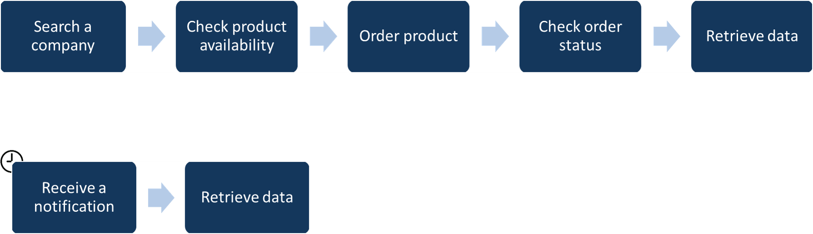

Coface has been a worldwide leader in the credit insurance market for more than 70 years. Our ambition is to facilitate business-to-business trade by working with customers to develop their domestic and export operations, fully assessing the financial risks they take and protecting their trade receivables against non-payment.
ICON is the Coface Business Information offer. Depending on the country, Coface relies on either a partner or its own research departments to retrieve detailed information on companies. This data is then returned in a COMMON format or used to establish different evaluations.
| Term | Description |
|---|---|
| Company | Legal person to order coface information on |
| Order | Business information request |
| Monitoring | Follow-up of at least one Company |
| Notification | Information to indicate a change occured during Monitoring |
ICON proposes two versions.
We keep on doing our best to minimize impact on our customers but we will sometimes need to modify our interface contract in order to enhance our features.
Such modifications will be classified as a minor or a major one.
When released, a minor version has no impact on the consumer. Some bugs have been fixed and some evolutions have been given. It will sometimes bring a modification of the interface contract but being an upgrade i.e. new fields and/or endpoints, the consumer is free to decide whether he wants to add the potential new features or not.
| Version | Release date |
|---|---|
Report API |
2017 |
Data API |
02/2023 |
Below you can find the list of publications/products you can order via APIs, depending on the version.
| Publication | Available format | Report API | Data API |
|---|---|---|---|
| Full Reports | JSON, HTML, PDF, XML | ||
| Snapshot Reports | PDF, XML | ||
| Credit opinion Reports | JSON, HTML, PDF, XML | ||
| Advanced opinion Reports | JSON, HTML, PDF, XML | ||
| Score Report | JSON, HTML, PDF, XML | ||
| Country risk assessment | JSON | ||
| Sector risk assessment | JSON | ||
| Debtor risk assessment (with and without history) | JSON | ||
| Credit opinion & advanced opinion | JSON | ||
| Financials | JSON |
We have two ways to secure our API: firstly with a special API key and secondly with a token generated with OAuth 2.0 Password Grant (identification protocol).
Currently there are two possibilities to acces the API. Depending on your discussion with the contact person from our team, one of them will be provided to you.
For more details and exactly what concrete steps needs to be done, please check also our How To / FAQ section
Below is our global process. More precise information cand be found in each page corresponding to API version page.
To order monitoring or report, you need to follow 5 steps :
In case you have ordered a monitoring, during the next year, you can receive notifications. Once you get one, you can retrieve its content.
| Environments | Endpoint | Purpose | Limitation |
|---|---|---|---|
| Production | https://icon-api.coface.com/ | Get fresh data | Each order are billed. |
| Test | https://icon-api-test.coface.com/ | Test your code free of charge | The data are not refreshed. It depends also of regions, how accurate they maintain the companies info. Only immediate order can be done. Our provider desn't push modification in this environment, so notifications can not be tested. |
Specifics details for each version will be available directly on the page of the version.
API access rate limits are applied on user level in unit time. Access to the API is limited to 60 requests per minute per endpoint. In addition, every API response is accompanied by the following set of headers to identify the status of your consumption.
| Header | Description |
|---|---|
| X-RateLimit-Limit | The maximum number of requests that the consumer is permitted to make per minute. |
| X-RateLimit-Remaining | The number of requests remaining in the current rate limit window. |
If you are hitting this limit, further requests will be rejected with an HTTP 429 error. If you believe that due to your business need, you intend to use the api over this limits and limit needs to be increased, then please contact us.